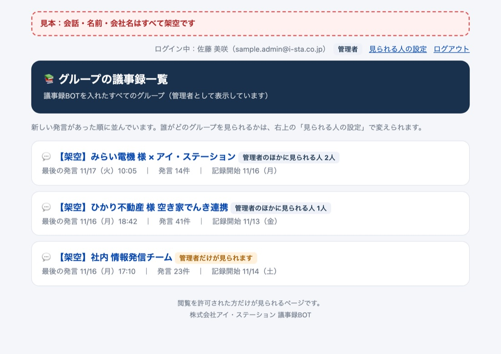
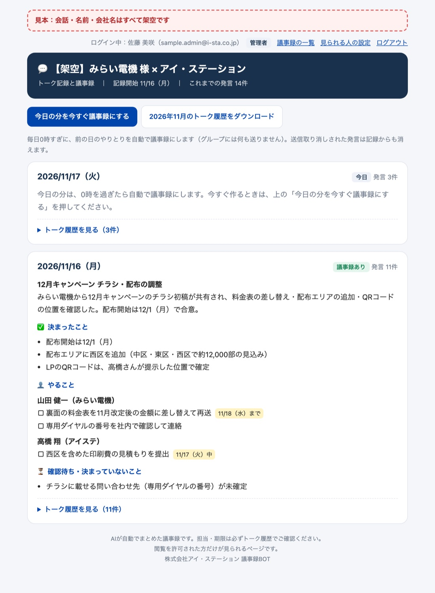
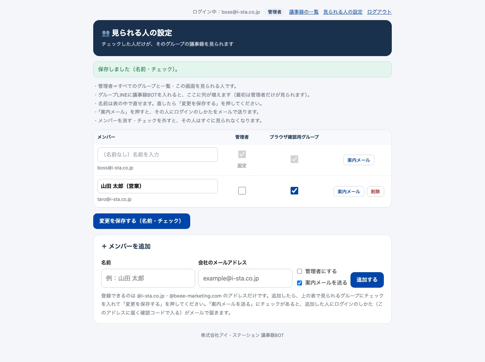

1議事録BOTでできること
LINEのやりとりは、そのままでは議事録に残りません。BOTをグループに入れておくだけで、記録と議事録づくりを自動にします。
💬グループの会話を全部記録
取引先・社内のグループLINEにBOTを招待するだけ。発言を名前・時刻つきで日ごとに保存します。BOTはふだんの会話には返事をしません。
📝毎日、自動で議事録に
毎日0時すぎに前の日のやりとりをAIが議事録にします（要点・決まったこと・やること〈担当・期限〉・確認待ち）。グループには何も送りません。
🔐許可した人だけが見られる
議事録はWebページで見ます。会社のメールに届く6桁のコードでログインし、管理者がチェックしたグループだけ見られます。
ほかに、BOTとの1対1に録音や文字起こし（Notta・Teamsの貼り付け、音声ファイルなど）を送ると、数分で議事録が返ってくる機能もあります。


2裏側のしくみ
登場するのは「LINE公式アカウント」「サーバー」「作業用のMac」の3つです。
窓口LINE公式アカウント（BOT）
- グループや1対1の発言を受け取る
- 届いた発言をすぐサーバーへ転送
転送
受付・保管庫サーバー（24時間動く）
- 発言を名前・時刻つきで日ごとに保存
- 議事録ページを表示・ログインで見られる人を制限
- 議事録づくりの仕事を「順番待ち」に入れる
仕事／結果
作業係作業用のMac（社内）
- サーバーに仕事を取りに行く
- 録音の文字起こし（Mac内のAI・無料）
- Claudeで議事録の文章をつくり、サーバーへ戻す
▲ 見る
見る人ブラウザ（パソコン・スマホ）
- 会社メールに届く6桁のコードでログイン
- 許可されたグループの議事録・トーク履歴を見る／ダウンロード
Macが止まっても記録は続きます。記録はサーバーの仕事なので、止まるのは議事録づくりだけ。Macが動き出したら、たまった分を順番に処理します。
LINEの鍵はサーバーにだけ置きます。Macには置きません。サーバーとMacは、長い合言葉と暗号化した通信（HTTPS）でつながります。
残るもの・消えるもの。グループのトーク履歴と議事録は会社の記録としてサーバーに残します。録音は議事録を作ったら消し、1対1の議事録ページは30日で消えます。送信取り消しされた発言は記録からも消えます。
LINEの無料枠をほぼ使いません。BOTからの「返信」は無料。グループの記録と毎日の議事録はグループに何も送らないので、無料枠（月200通）を使うのは録音の議事録を送り返すときだけです。
3会社で用意するもの・費用の目安
LINE・サーバー・Mac・AIの契約は、それぞれの会社の名義で用意します（アイ・ステーションの物は使えません）。
| 用意するもの | 何に使うか | 条件のめやす | 費用のめやす |
|---|---|---|---|
| LINE公式アカウント（新しく作る） | BOTの窓口 | 会社名義のLINEビジネスIDで作成 | 無料（月200通まで） |
| サーバー（VPS） | 受付・保管庫・議事録ページ | メモリ1GB以上・Ubuntu 24.04 | 月1,000円前後 |
| ページのアドレス（ドメイン） | 議事録ページのURL | 今あるドメインのサブドメインでOK （例：gijiroku.会社名.co.jp） | 今あるドメインなら0円 |
| 作業用のMac | 文字起こし・議事録づくり | M1以降のMac・メモリ16GB以上がおすすめ 電源につないだまま・スリープしない | 今あるMacなら0円 |
| Claudeの有料プラン | 議事録の文章づくり | 会社のアカウントでPro以上 | 月20ドル〜 |
| ログイン用メールの送信元 | 6桁の確認コード・案内メールを送る | 専用のGmailアカウント（2段階認証＋アプリパスワード） | 無料 |
毎月かかる費用約4,000円〜サーバー＋Claude Pro（Macを持っている場合）
LINE0円月200通を超えたら有料プランの検討
最初にかかる費用0円〜Macを新しく買う場合は別途
設置の作業時間半日〜1日技術担当の作業
先に決めておくこと
- 固定の管理者（2〜3人のメールアドレス）：全部のグループと管理画面を見られる人。画面からは外せません。
- ログインできるメールのドメイン（例：@会社名.co.jp）：この会社のアドレス以外は登録できないようにします。
- 最初に入れるグループ：まずテスト用のグループで試し、その後に本番のグループへ。
- LINEのプラン変更・メンバー追加を誰がするか：アカウントの管理者を決めておきます。
※Macを用意できない場合は、文字起こしとAIを有料のAPI（使った分だけの従量課金）で動かす形に作り変える必要があります。その場合は別途ご相談ください。費用は2026年11月時点の目安です。
4手順（STEP 1〜9）
終わったものにチェックを入れていきます。会社＝太田さんの会社で行う作業、技術担当＝サーバーやMacに詳しい人が行う作業です。
STEP1
LINE公式アカウントを作る会社約15分
STEP2
BOTとして動くように応答の設定を変える会社技術担当約5分
⚠ アイ・ステーションで実際に起きたことこの参加の設定が保存されておらず、グループに招待した瞬間にBOTが退会してしまいました。招待してすぐ退会したら、まずここを見てください。
STEP3
サーバーとページのアドレスを用意する会社契約 約30分
STEP4
作業用のMacとClaudeを用意する会社技術担当約30分
STEP5
ログイン用メールの送信元を用意する会社約15分
STEP6
プログラムを設置する技術担当半日〜1日
STEP7
LINEとサーバーをつなぐ技術担当約15分
STEP8
動作確認（テスト用のグループで）会社技術担当1日

STEP9
本番の運用を始める会社
ここまでできたら、運用できる状態です 🎉あとはグループに招待して、見られる人を設定するだけで使えます。
5運用の注意点
| こと | 内容 |
|---|---|
| 過去の会話 | BOTを入れる前の会話は取れません（LINEの仕様）。必要なら入れる前のトーク履歴は手で保存してください。 |
| 1グループに1つ | 1つのグループに入れられるLINE公式アカウントは1つだけです。ほかの公式アカウントが入っているグループには入れません。 |
| 無料枠（月200通） | 録音の議事録を送り返すと1件＝1通。グループに送ると人数分数えます（10人なら10通）。グループの記録と毎日の議事録は何も送らないので数えません。 |
| Macの電源 | Macが止まる・スリープすると議事録づくりが止まります（記録は続きます）。再開したら順番に処理します。 |
| Claudeのログイン | Claudeのログインが切れると議事録が作れません。契約の更新やパスワード変更のあとは確認してください。 |
| 見られる人 | メンバーを消す・チェックを外すと、ログイン中の人もすぐ見られなくなります。退職・異動のときは忘れずに外してください。 |
| AIの議事録 | 議事録はAIが自動でまとめたものです。担当・期限など大事なところは、トーク履歴でも確認してください。 |
6よくあるつまずき
BOTをグループに招待したら、すぐ退会してしまう
LINE公式アカウントManagerの「アカウント設定 → 機能の利用 → トークへの参加」が「許可しない」になっています。「グループ・複数人トークへの参加を許可する」にして保存し、開き直して確認してから、もう一度招待してください（STEP 2）。
Webhookの「検証」が失敗する
サーバーのプログラムが止まっている、URLのつづりが違う、HTTPSになっていない、のどれかが多いです。
/health が開けるか、URLの最後が /line/webhook になっているかを確認してください。確認コードのメールが届かない
①管理画面に登録されていないアドレス（登録のないアドレスには送りません） ②迷惑メールに入っている ③送信元Gmailのアプリパスワードが違う・取り消された、のどれかです。
議事録ができない・とても遅い
作業用のMacを確認してください。電源が切れている・スリープしている・ネットが切れている・Claudeのログインが切れている、のどれかがほとんどです。直れば、たまっていた分から順番に処理されます。
無料枠（月200通）が足りなくなりそう
グループで録音の議事録をよく使うと、人数分の通数が減ります。有料プランに変えるか、録音はBOTとの1対1に送る運用にしてください（1対1なら1件1通）。
7技術担当向けメモ
サーバーやMacに詳しい方向けの補足です。
| 場所 | 中身 |
|---|---|
| サーバー | Node.js（外部の部品はメール送信用の nodemailer のみ）／Caddy でHTTPS／systemd で常駐。データはサーバーのフォルダ（JSONファイル）に保存。 |
| Mac（作業係） | ffmpeg で音声を変換し、mlx-whisper（large-v3-turbo）で文字起こし、claude -p で議事録を作る（下書き→見直しの2回）。launchd で常駐。サーバーへは60秒ごとに「動いています」を送り、仕事を取りに行く。 |
| つながり | LINE →（Webhook・署名を確認）→ サーバー ←（合言葉＋HTTPS）← Mac。サーバーからMacへは接続しない（Macの側から取りに行く）ので、Macを外に公開する必要はありません。 |
サーバーの設定ファイル（.env）の主な項目
| 項目 | 入れるもの |
|---|---|
PUBLIC_BASE | ページのアドレス（例：https://gijiroku.会社名.co.jp） |
WORKER_TOKEN | サーバーとMacの合言葉（長いランダムな文字列・Mac側にも同じものを入れる） |
ADMIN_TOKEN／ADMIN_CODE | 状況ページの合言葉／LINEで「管理者登録」するときの合言葉 |
SETUP_CODE | LINEの鍵の受け取りページの合言葉（1回使うと閉じる） |
ADMIN_EMAILS | 固定の管理者のメールアドレス（カンマ区切り） |
ALLOWED_DOMAINS | 登録できるメールのドメイン（例：会社名.co.jp）。必ずその会社のドメインに変える |
GMAIL_USER／GMAIL_APP_PASSWORD | STEP 5 で用意したGmailのアドレスとアプリパスワード |
⚠ 秘密の扱い合言葉・LINEの鍵・アプリパスワードは、チャットやメールに貼らないでください。合言葉は32文字以上のランダムな文字列にし、設定ファイルは本人だけが読める権限にします。
8分担のまとめ
| STEP | やること | 担当 |
|---|---|---|
| 1〜2 | LINE公式アカウントを作って設定する | 会社（設定は技術担当でも可） |
| 3〜5 | サーバー・ドメイン・Mac・Claude・Gmailを用意する | 会社 |
| 6〜7 | プログラムを設置して、LINEとつなぐ | 技術担当 |
| 8 | テスト用のグループで動作確認 | 会社＋技術担当 |
| 9 | 本番のグループに招待・見られる人の設定 | 会社 |
わからないところは、伊藤までお気軽にご連絡ください。